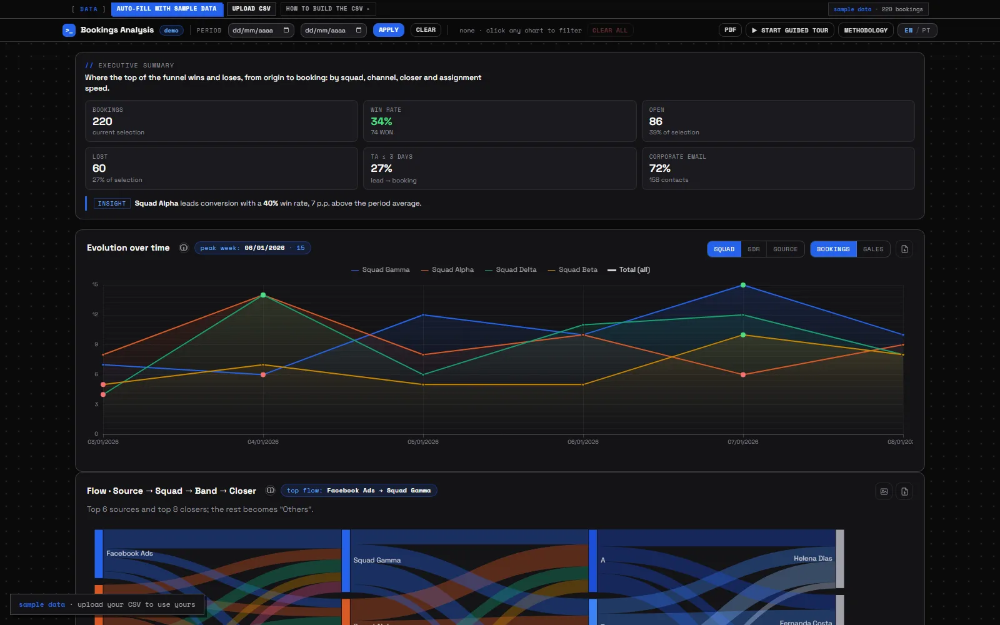
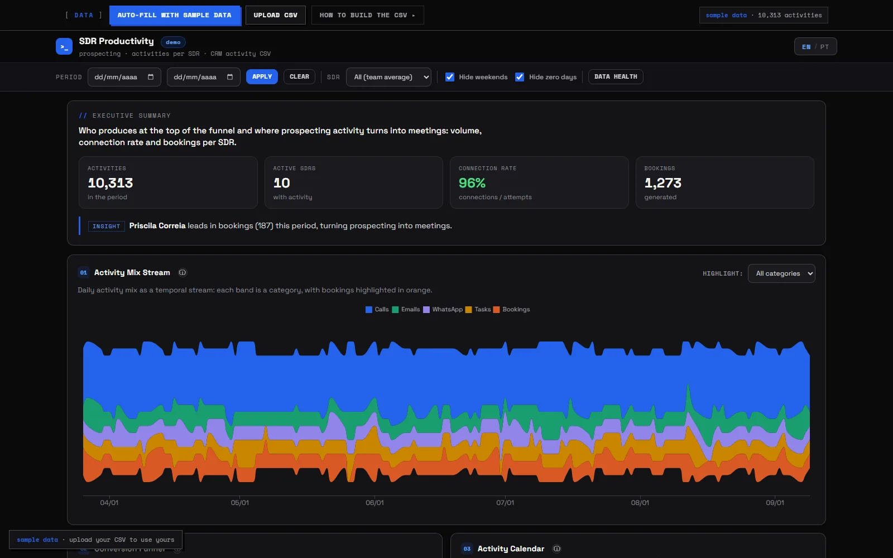
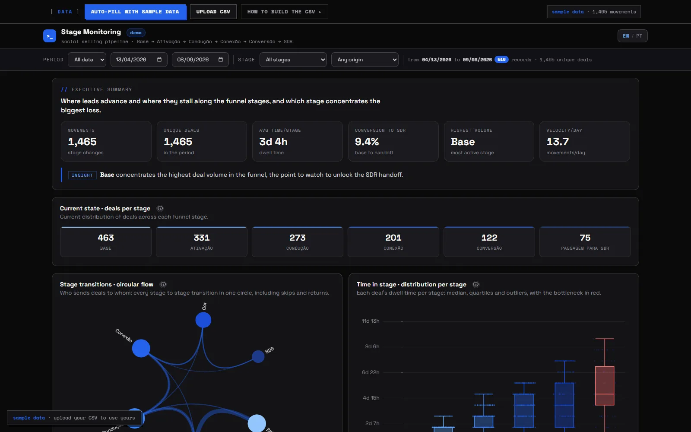
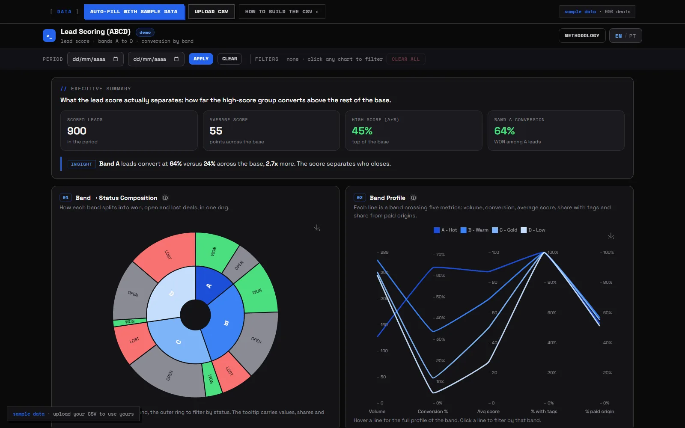
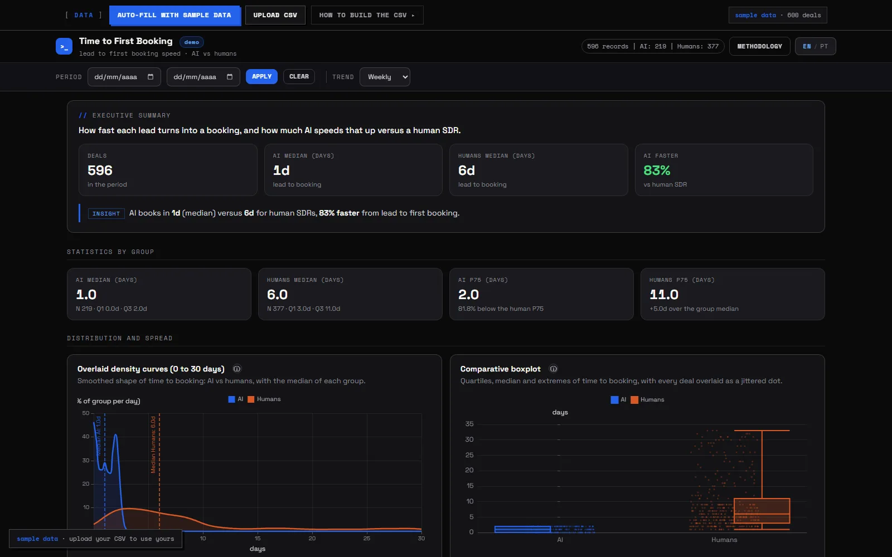
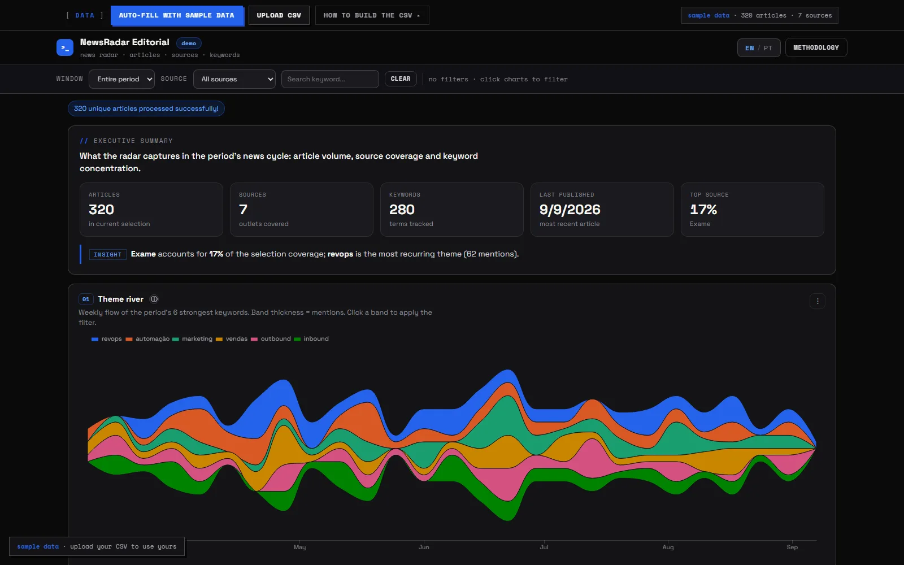
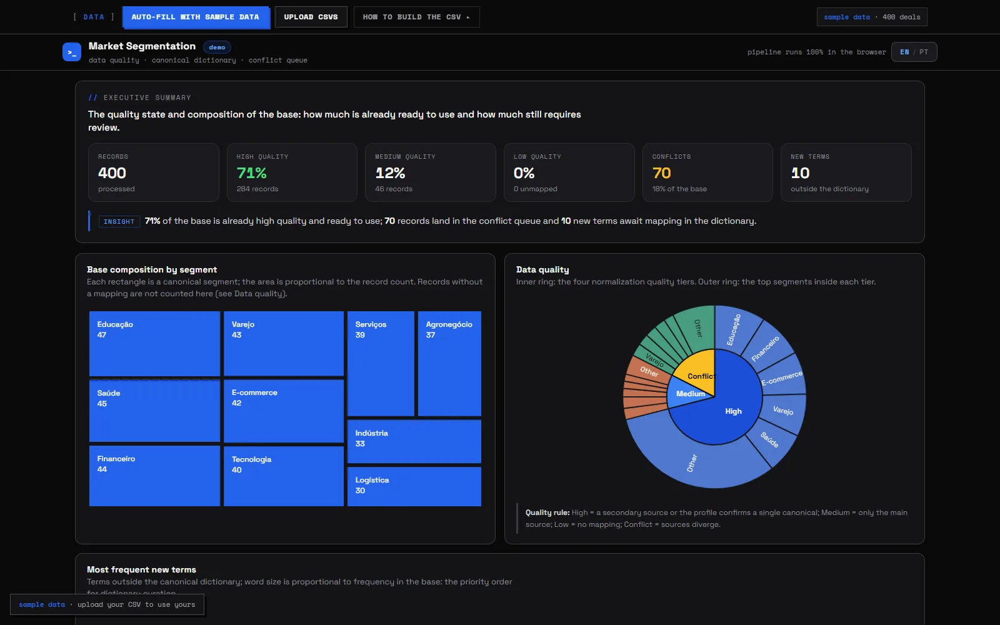
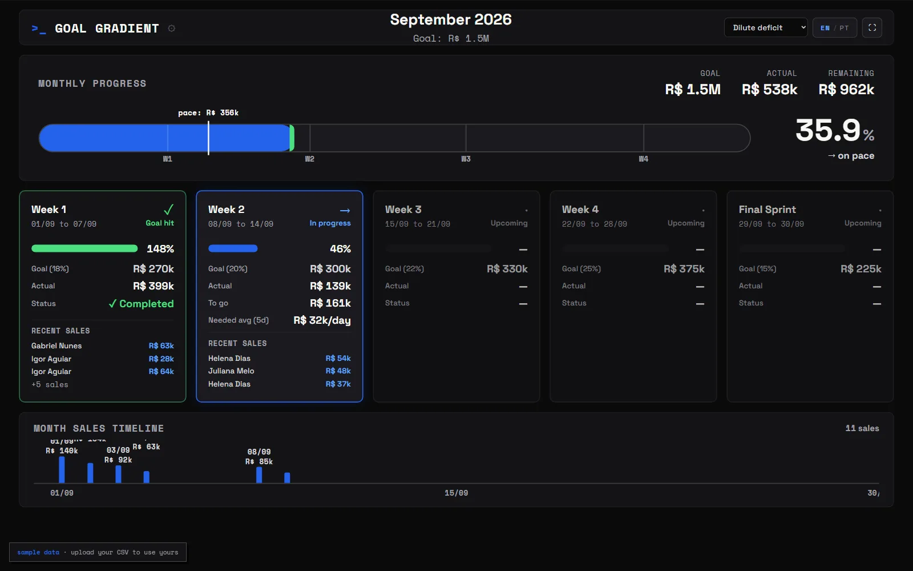

Dashboards

Bookings Analysis
Complete mapping of meeting bookings: UTM origin, squad, assignment speed (TA), conversion rate by channel and interactive cross-filters.

SDR Productivity
Daily tracking of each SDR's productivity: calls, connections, bookings, WhatsApp, emails, tasks. Individual ranking with team average and configurable goals.

Stage Monitoring
Real-time monitoring of stage changes in the Social Selling pipeline. Flow Sankey, average time per stage, ranking and bottleneck detection.

Lead Scoring (ABCD)
Interactive lead-scoring report with AI-based ABCD classification. Score × conversion correlation, distribution by origin, time analysis and tag segmentation.

Time to First Booking
Response-speed benchmark comparing human SDRs with AI-assisted SDRs. Measures the time from lead to first booking, distribution and trend analysis.

NewsRadar Editorial
Editorial dashboard for AI news-curation analysis. Volume by source, relevance score, keyword explorer (word cloud, network, heatmap) and content trends.

Market Segmentation
Deal segmentation by ICP with a canonical-terms dictionary. Automatically classifies leads into segments and flags conflicts and new terms.

Goal Gradient
Gamified TV dashboard (1920×1080) with weekly sales progress. Deficit redistribution (dilute or cascade), day-by-day timeline and pulsing cards on the current week.